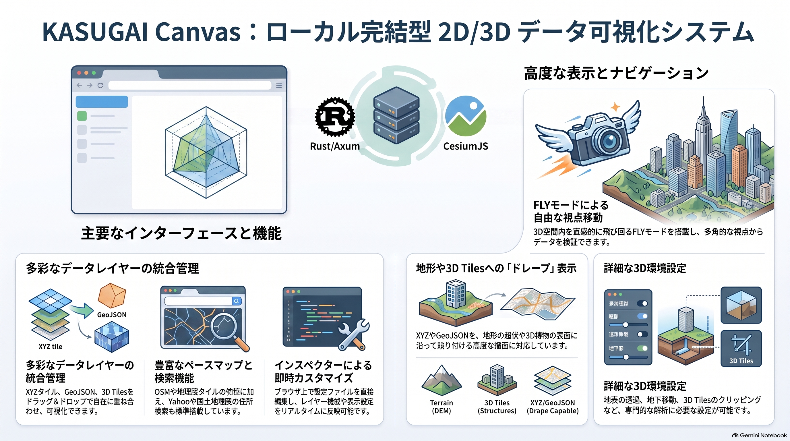

4. 実装システム
KASUGAI Canvas の現行実装は、ローカルPC 上で Rust/Axum サーバーを起動し、ブラウザ上の CesiumJS で 2D/3D 地理空間データを描画する構成です。Three.js は Cesium のビュー行列を共有する簡易な 3D 描画の枠組みとして組み込まれています。点群・3DGS・GLB 表示は V2.0.0 では未対応です。
開発起動時は
projects/default/kasugai_canvas.kasc
を初期サンプルとして読み込みます。配布 ZIP と Windows
インストーラーには東京都の表示例を含む
kasugai_canvas.kasc が同梱されます。

システム構成
┌──────────────────────────────────────────────┐
│ ブラウザ │
│ │
│ KASUGAI パネル │
│ ├─ Layers / Camera / Search / Share │
│ ├─ Info / 凡例 / Attr / 設定 │
│ └─ インスペクター設定登録 │
│ │
│ KASUGAI Basemap Selector │
│ └─ base: で定義した XYZ / TMS │
│ │
│ KASUGAI Navigation Toolbar │
│ ├─ Orbit / Fly モード切替 │
│ ├─ 2D / 3D 切替 │
│ └─ 方位コンパス │
│ │
│ CesiumJS + Three.js │
│ - Viewer / Scene / Globe │
│ - ImageryLayerCollection │
│ - Cesium3DTileset │
│ - TerrainProvider │
└──────────────────────────────────────────────┘
▲ HTTP
┌──────────────────────────────────────────────┐
│ Rust / Axum │
│ 127.0.0.1:8510 │
│ 静的アセット / タイルプロキシ / 設定 API │
└──────────────────────────────────────────────┘処理の流れ
- Rust/Axum が
web配下の画面と設定 API を配信する - インスペクター設定からレイヤー、ベースマップ、カメラプリセットを生成する
- CesiumJS が Terrain、XYZ、GeoJSON、3D Tiles を同一の 3D 地球ビューへ配置する
- XYZ・GeoJSON を
ImageryLayer/Entity/Primitiveとして地形へドレープする - Three.js は補助 3D 描画の枠組みとして組み込まれている。点群・3DGS・GLB 表示は V2.0.0 では未対応
UI パネルと主な機能
| パネル / コントロール | 主な機能 |
|---|---|
| Layers | XYZ / 3D Tiles / GeoJSON レイヤーの表示切替、グループ（排他グループは ○ のラジオボタン）、ドラッグ＆ドロップ並び替え、設定への永続化 |
| Basemap セレクタ | base: で定義したベースマップの選択・表示切替 |
| Camera | cam:
で定義したカメラプリセット、緯度・経度・高さ・ピッチ・ヘディングの手動入力 |
| Search | 住所検索（地理院 / Yahoo 選択可）、ベクトル検索（レイヤー・属性・値の三段階選択、テキスト検索、FlyTo） |
| Share | 共有 URL コピー |
| Info / 凡例 / Attr | HTML 情報表示、凡例画像、選択地物の属性表示 |
| 設定 | DEM / ドレープ、レイヤードレープ対象、Cesium 3D Tiles パラメータ、表示効果、プロジェクト切替、自動更新、断面クリップ |
また、ナビゲーション ツールバーには Orbit/Fly
モード切替、fly_geojson:
で定義した経路の選択ドロップダウン、2D/3D
切替、方位コンパスが配置されています。描画（Draw）は Fly
パネル内の Draw タブ から行います。
その他、URL パーマリンクの自動更新、共有 URL
コピー、プロジェクト切替（projects/<project>
単位）、自動更新（latest.json
確認）も実装しています。
Fly モード
Fly モードでは手動操縦か、fly_geojson:
で定義した経路の自動追従を選択できます。インスペクターに
fly_geojson: ルート名 | URL | speed=... | height=...
と記述すると、Fly
パネルのドロップダウンにルートが追加されます。ルートを選択し直すと、読み込みとルート状態をリセットして最初から再開します。
| 操作 | 動作 |
|---|---|
| マウスホイール | 速度を ±1 km/h で調整（手前：加速、奥：減速） |
| walk-help 速度入力 | flySpeed（km/h）を直接上書き |
| walk-help 補正入力 | flyHeight（m）を直接上書き（点の高さに対する操作中の補正） |
| 点選択 + 点高入力 | 各点の z（AGL）を編集 |
| 保存ボタン | 編集した点の高さを GeoJSON へ保存 |
| キー +/- | 速度を増減 |
| キー Q / E | 高さ補正を増減 |
Fly パネルの高さ表示は、手動時に
地形高（地表標高）と
補正（カメラ地上高）、ルート追従時に
地上高（AGL）（z + flyHeight）と
補正（flyHeight）をそれぞれ別行で表示します。
速度は正でも負でも可です。0
で停止、負でバック（手動はカメラを逆方向へ、自動はルートを逆方向へ）します。手動・自動で
flySpeed（km/h）と
flyHeight（m）を共有するため、モード切替時も値が継続します。
ルート描画
Fly パネルの Draw タブを選択すると Orbit モード に切り替わり、描画準備が整います。タブ内の Draw ボタンを押すと描画を開始し、右クリックで点を追加、右ダブルクリックで描画を終了できます。描画したルートは：
- プロジェクトフォルダ内に
drawn_route_1.geojson、drawn_route_2.geojson… のように自動連番でキャッシュ（PUT /api/file）- 同じファイル名があっても上書きせず、新しい番号のファイルとして保存
- プロジェクト内のファイル一覧は
GET /api/files?project=...で取得
- 自動的に
fly_geojson:行をインスペクターに追加し、Fly モードで選択可能
描画ルートの GeoJSON には各点の高さ z を
heightReference: "Terrain"
として保存します。z
はその点の地形からの高さ（AGL）を表します。飛行時の実際のカメラ高さは
z + 地形高 + flyHeight
で計算します。flyHeight
は操作中の補正値であり、GeoJSON
には含まれません。セグメント内では始点・終点の 3D
位置と地形高を距離に応じて補間し、滑らかな高度変化にします。カメラは折れ点に到達する前から次の線分方向へ滑らかに旋回します（最後の
100m、または線分長の 30% 以内で旋回開始）。
URL パーマリンク
カメラ情報（latitude / longitude / height / heading / pitch）は
URL
のハッシュ（#latitude=...&longitude=...）に保持します。ハッシュはアドレスバーで書き換えてもページが再読み込みされないため、座標を変更すると現在のビューからそのまま
Google Earth
風（距離に応じた飛行時間＋一度ズームアウトして降下する弧）に FLYTO
します。project
などカメラ以外のパラメータはクエリ（?project=...）に保持します。
カメラ pitch の扱い
URL パラメータ・カメラ入力・カメラプリセットの
pitch は Cesium の
camera.pitch（度数法）と同じ符号体系で扱います。水平を
0°、上向きを +、真下を −90°
とします。
| 方式 | 通常範囲 | 真下 | 水平 | 真上 | 備考 |
|---|---|---|---|---|---|
| Google Earth t | 0° 〜 90°（実用） | 0° | 90° | 180°以上も可 | 上限なし |
Cesium camera.pitch |
−90° 〜 0°（実用） | −90° | 0° | +90° | 3D モードではジンバルロック回避のため −84.99° にクランプ。2D モードでは −90° 固定 |
最終決定として、本システムでは Cesium
camera.pitch と同じ向きを採用 します。
旧形式（?latitude=... クエリ形式）の URL
も引き続き解釈されますが、クエリの変更はブラウザ仕様によりページ再読み込みが発生します。その場合も前回のカメラ位置を
sessionStorage から復元して即表示し、そこから新しい座標へ FLYTO
します。開いた後は自動的に新形式（ハッシュ）へ移行されます。
検索
住所検索は国土地理院住所検索 API
をデフォルトとし、Yahoo Local Search API を
yahooAppId
設定で追加できます。検索結果は住所・施設名を一覧表示し、クリックでその位置へ
FlyTo します。
ベクトル検索は読み込んだ GeoJSON /
layer:
データを対象に、レイヤー・属性・値の三段階で絞り込みます。テキスト検索と
FlyTo に対応し、非表示のベクトルレイヤーも検索対象に含めます。
属性・凡例・Info
属性は地物をクリックすると Attr パネルにテーブル表示されます。レイヤー属性一覧ボタンでは選択中または全レイヤーの属性・値を表形式で絞り込み表示できます。
凡例は legend:
で指定した画像を表示します。Info は
info: で指定した URL の HTML
をサニタイズして表示します。
レイヤーと描画順
| 種類 | 実装 | 表示方法 |
|---|---|---|
| Terrain | Cesium TerrainProvider |
選択した DEM を Globe 地形として表示 |
| Base map | Cesium ImageryLayer |
Globe 表面へ XYZ / TMS を貼り付け |
| XYZ | Cesium ImageryLayer |
ImageryLayerCollection に追加。Terrain
上へ自動ドレープ |
| GeoJSON | Cesium GeoJsonDataSource /
Entity |
設定により追加。DEM / 3D Tiles 表面へ
ClassificationType で追従 |
| 3D Tiles | Cesium Cesium3DTileset |
設定により追加。Globe 上へ配置 |
レイヤーパネルの各行はドラッグ＆ドロップで並べ替えられます。並べ替えた順序は
ImageryLayerCollection の lower() /
raise() や DataSource の
index
へ反映されます。表示・非表示の切替や排他グループの動作は並べ替え後も維持されます。
地形、ドレープ、高さ基準
DEM テクスチャーは DEM から作った地形メッシュに Base map 画像を貼る表示です。ドレープは XYZ・GeoJSON などのレイヤーを DEM または 3D Tiles の地形表面の起伏に沿わせて貼る表示です。前者は地形の下地画像、後者は既存レイヤーの地形追従であり、別の処理です。
CesiumJS では ImageryLayer は Globe
表面へ自動的に地形に沿って描画されるため、XYZ タイルは特別な
TerrainExtension
不要でドレープされます。GeoJsonDataSource /
Entity については
heightReference: Cesium.HeightReference.CLAMP_TO_GROUND
または clampToGround: true
を指定して地形に吸着させます。
ドレープの設定フロー
DEMで Terrain 表示に使う DEM / TerrainProvider を選ぶドレープ対象地形の DEM／3D Tiles から、表示中で利用可能な地形を選ぶドレープを適用するレイヤーで ON の XYZ・GeoJSON だけへ、選択した地形を適用する- Base map は標準では
ImageryLayerとして Globe 表面へ表示する
| 設定UI | 役割 | 他の設定への影響 |
|---|---|---|
DEM |
Terrain 表示に使う DEM を選ぶ | デフォルトは
Re:Earth Terrain (楕円体高 / WGS84)。内包ソースは
Re:Earth Terrain（標高 / MSL、楕円体高 / WGS84）および Terrarium
DEM（AWS）です。新しい DEM を追加する場合は app.js の
demSources へ TerrainProvider 定義を登録する |
Terrain (DEM表示) |
選択した DEM を有効にする | DEM をドレープ対象として使うには ON が必要。3D Tiles の表示・選択は変更しない |
3D Tiles (BASEMAPドレープ) |
Base map 専用の 3D Tiles ドレープを有効にする | 表示中の 3D Tiles がある場合、Base map の代わりに 3D Tiles 表面へテクスチャを重ねる。XYZ・GeoJSON の設定には影響しない |
ドレープ対象地形 |
DEM と 3D Tiles を個別にドレープ面へ登録する | DEM は初期状態で ON、3D Tiles は OFF。両方を ON にすると、利用可能な両方をドレープ面にする |
ドレープを適用するレイヤー |
XYZ、GeoJSON の各レイヤーへ地形追従を付与する | XYZ・GeoJSON は初期状態で ON。ON のレイヤーだけをドレープする。地形ソース自体の表示は変更しない |
| ドレープ対象地形 | 有効になる条件 | ドレープ面 |
|---|---|---|
| DEM | Terrain (DEM表示) が ON |
表示中の DEM |
| 3D Tiles | URL を持つ 3D Tiles レイヤーが 1 つ以上表示中 | 表示中の 3D Tiles 表面 |
| DEM と 3D Tiles | 両方を ON にし、それぞれの有効条件を満たす | 条件を満たす DEM と 3D Tiles の両方 |
| どちらも OFF | なし | 適用レイヤーは通常表示 |
Terrain を ON にした場合、Base map は ImageryLayer
として Globe
表面へ描画されます。3D Tiles (BASEMAPドレープ) を ON
にすると、3D Tiles 表面へ別の ImageryLayer
相当のテクスチャを重ねます。Terrain を OFF にした場合も、表示中の
3D Tiles があれば Base map を 3D Tiles
表面へドレープし、それ以外は通常の ImageryLayer
を表示します。
XYZ タイルは設定の maximumLevel（または互換 alias
maxZoom）で個別に最大ズームを指定できます。未指定時はデフォルトで
25 まで取得します。CesiumJS の
UrlTemplateImageryProvider を使って表示します。
高さ基準
Terrain と 3D Tiles は、高さ基準を揃えなければ数十 m の上下ずれが生じます。データセットごとに高さ基準を確認して DEM / TerrainProvider を選択します。
| データ | 高さ基準 | 選択する DEM |
|---|---|---|
| 元の PLATEAU CityGML | 東京湾平均海面基準の標高（JGD2011 / EPSG:6697） | 標高基準の DEM / TerrainProvider を使用 |
| Re:Earth 配信の PLATEAU 3D Tiles | WGS84 楕円体からの高さ | Re:Earth Terrain (楕円体高 / WGS84) 対応
TerrainProvider |
| WGS84 楕円体高で作成されたその他の 3D Tiles・Cesium 地形 | WGS84 楕円体からの高さ | Re:Earth Terrain (楕円体高 / WGS84) 対応
TerrainProvider |
| 高さ基準が不明な 3D Tiles | データ仕様または tileset のメタデータを確認する | 確認後に上記いずれかを選ぶ |
Re:Earth Terrain は Cesium quantized-mesh
形式で配信され、Cesium.CesiumTerrainProvider
として読み込みます。elevation
は平均海面基準の標高（MSL）、ellipsoid は EGM2008
ジオイド高を加えた WGS84 楕円体高です。Terrarium DEM（Mapzen /
AWS）は height = R × 256 + G + B / 256 - 32768
でメートル単位の高さを復元し、カスタム
TerrariumTerrainProvider 経由で利用します。
インスペクター設定
ユーザーがテキストエリアに入力したレイヤー・ベースマップ・カメラプリセットを読み込み、CesiumJS Viewer へ反映します。設定の読み込みはブラウザ内で完結し、HTTP 通信は行いません。
kasugai_canvas.kasc（テキスト形式。1行に `種類: 値` を記述）
base: ベースマップタイトル | URL | アトリビューション | option=...
xyz: レイヤータイトル | URL | アトリビューション | option=...
3dtiles: レイヤータイトル | URL | option=...
geojson: レイヤータイトル | URL | option=...
layer: レイヤータイトル | URL | option=...
fly_geojson: タイトル | URL | speed=... | height=... | pitch=... | loop=... | step=...
cam: タイトル | 緯度 | 経度 | h=高さ | p=ピッチ | d=ヘディング
info: URL
legend: URL または タイトル | URL
background: #rrggbb
yahooAppId: Yahoo Local Search API AppIDoptionにはopacity=0.8、maximumLevel=18（または互換 aliasmaxZoom）、tileSize=256、proxy=offなどが使えます。on/offフラグでレイヤーの初期表示を切り替えられます。- プロジェクトは
projects/<project>単位で切り替えます。設定ファイル内にproject項目はありません。
Fly モードの経路設定
fly_geojson: では、GeoJSON の
LineString / MultiLineString
を読み込み、Fly
モードで自動飛行する経路として使えます。複数定義すれば Fly
パネルのドロップダウンから選択でき、手動
を選ぶと従来の WASD / マウス操作に戻ります。
fly_geojson: ルートA | https://example.com/route.geojson | speed=60 | height=100 | pitch=-15 | loop=true
fly_geojson: ルートB | https://example.com/routeB.geojson | speed=30 | height=50| オプション | 意味 | デフォルト |
|---|---|---|
speed（s） |
地上速度（km/h） | 30 |
height（h） |
操作中の高さ補正（m） | 0 |
pitch（p） |
カメラピッチ（度） | -10 |
step |
互換性のため受け付けるが、現在は頂点間を直接移行するため無視 | （不使用） |
loop（l） |
終点で最初に戻してループ | false |
off |
選択肢に表示しない | - |
fly_geojson: の GeoJSON ルートは
LineString / MultiLineString
のオリジナル頂点をそのまま使用します。各頂点の z
はその点の AGL（地形からの高さ）
として解釈します。飛行時の実際の高さは
GeoJSON z + 地形高 + flyHeight
として計算します。flyHeight
は操作中の補正値であり、GeoJSON
には含まれません。セグメント内では始点・終点の 3D
位置と地形高を距離に応じて補間します。
Fly パネルの UI
Fly パネルでは以下の操作ができます。
- 経路選択 —
fly_geojson:で定義した経路か手動を選びます。 - プリセット — よく使う速度・高さ・ピッチをまとめて適用できます。
| プリセット | 高さ（m） | 速度（km/h） | ピッチ（°） |
|---|---|---|---|
| 徒歩 | 2 | 5 | -5 |
| 車載 | 2 | 60 | -10 |
| ドローン | 200 | 60 | -30 |
| 広域 | 1000 | 300 | -45 |
- 補正 / 速度 / ピッチ —
それぞれ数値を直接入力して変更できます。経路飛行中は
flyPath.pitchを、手動時はカメラのチルトを操作します。 - 起終点逆転 — Fly パネルヘッダーのボタンです。経路選択中は頂点配列を反転し、手動時はカメラ方位を 180° 回転させます。
制限・注意事項
3D Tiles への XYZ ドレープ
CesiumJS 1.130 以降で
Cesium3DTileset.imageryLayers が追加され、3D Tiles
表面に ImageryLayer
をドレープできるようになりました。KASUGAI Canvas では 1.144.0
を使用しています。
| 設定 | 効果 |
|---|---|
ドレープ対象地形 → 3D Tiles ON |
表示中の 3D Tiles をドレープ対象として有効化 |
ドレープを適用するレイヤー → XYZ
ON |
各 XYZ タイルを 3D Tiles 表面へドレープ |
3D Tiles (BASEMAPドレープ) ON |
ベースマップを 3D Tiles 表面へドレープ |
ドレープ対象になった XYZ / ベースマップは、Globe 表面には重ねず、3D Tiles 表面のみに表示されます。
既知の制限
- アップサンプリング未対応
- 3D Tiles のジオメトリが粗い場合、高精細な XYZ 画像をそのままドレープしても、ジオメトリの解像度に制限されます。
- テクスチャユニット制限
- 同時に使用できるテクスチャ数は GPU によりますが、おおよそ 16 枚程度です。複数の高解像度 XYZ を 1 つの 3D Tiles に重ねると、一部のテクスチャが省略されることがあります。
CESIUM_primitive_outline非対応- この拡張を使用した 3D Tiles ではドレープが正しく描画されない場合があります。
DEM / 地形
- 初期表示は
EllipsoidTerrainProviderですが、Terrain (DEM表示)が ON の場合はRe:Earth Terrain (楕円体高 / WGS84)がデフォルトで読み込まれます。 CesiumWorldTerrainは同梱されていません。利用するには Cesium Ion へのアクセスが必要です。- Re:Earth Terrain は quantized-mesh 形式で標準
CesiumTerrainProviderで利用できます。国土地理院標高 PNG 等の独自 Terrarium 形式 DEM を追加する場合は、Cesium 用のTerrainProviderを実装してdemSourcesへ登録する必要があります。
V2.0.0 で未対応の機能
現状の実装では未対応の機能は以下の通りです。
- Three.js 点群 / 3DGS / GLB 表示
ローカル開発時の注意
- Python 等の簡易 HTTP サーバーでは
/api/projectsや/api/config、/api/tile、/api/search等のエンドポイントが存在しません。 - 開発起動時は Rust/Axum サーバーを使用してください。静的ファイルのみの表示では設定・レイヤー・プロジェクトの読み込みは行えません。